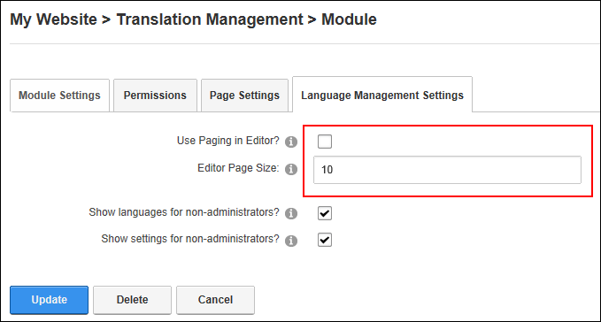
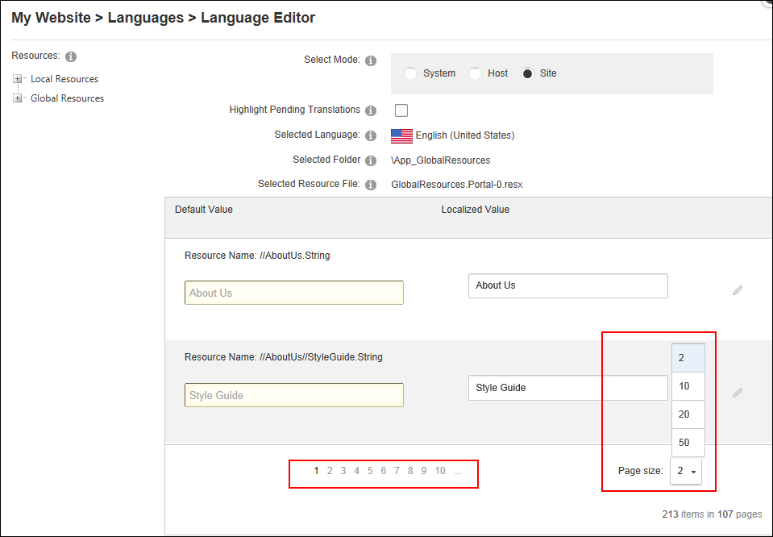

- At Editor Page Size enter the number of items to be displayed on each page of the editor. The default setting is 10. A drop down box will also be available in the editor allowing you to modify the page size to either 10, 20 or 50.
How to configure settings for the Language Editor for a single site. DNN Platform users (including anonymous users) must be granted Edit Page permissions to the page where the Languages module is located. Evoq Content users (including anonymous users) must be granted Add Content permissions to the page where the Languages module is located.

